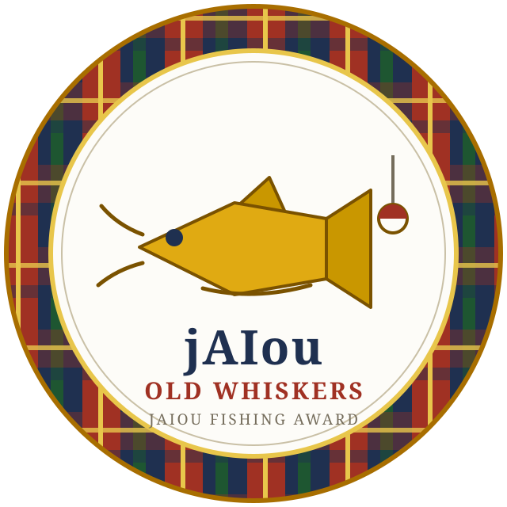

One rod, one bobber, and whatever the Blanco River feels like giving up. Most days it's bluegill. Some days it's an old boot. And once in a great while it's Old Whiskers — the flathead that's been down there longer than anybody can prove. Land him, and the river owes you a badge.
The River
The water's flat. Cast when you're ready.

You landed Old Whiskers. The fishing badge is yours.
Fetching your claim code…
Take the code to the guestbook and put it in the Code field when you post — the badge stamps your post.
What's in the river
- Bluegill
- Small, honest, and always hungry. Up to about a pound.
- Largemouth bass
- The regular fight. One to six pounds, and he'll argue about all of it.
- Guadalupe bass
- The Texas state fish — lives in these rivers and nowhere else on Earth.
- Rio Grande cichlid
- The only cichlid native to the United States — and it's right here in the Blanco. Prettiest fish in the river, too.
- Channel catfish
- Whiskers, but not the whiskers. Two to fourteen pounds.
- Flathead catfish
- A serious fish. Five pounds and up, sometimes way up.
- Gar
- Mostly longnose, long as your arm and then some. Every dock on the Blanco has a story about one the size of a telephone pole.
- Old Whiskers
- Flathead, sixty pounds and better. He's down there. Probably.
- The old boot
- Not a fish. The river gives back what it gets.
- Mud eel
- Nasty, slick, and mad about it. Nobody wants an eel on their line.
- Water moccasin
- Cottonmouth. Derek once had one chase him down in this river. The water is his — leave it to him.
- Turtle
- Put him back gentle. He lives here too.
- Dad's old rowboat
- It's still down there. Some things the river keeps.
Your stringer
No casts yet.
Blanco checklist
Leaderboard
Biggest bass: —
Loading the board…
The badge is Old Whiskers. The board is its own victory.